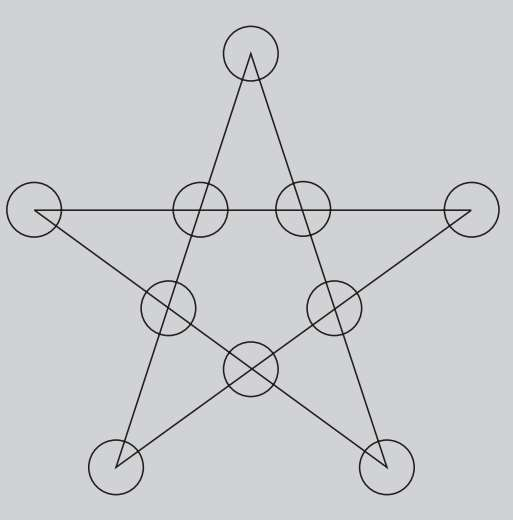
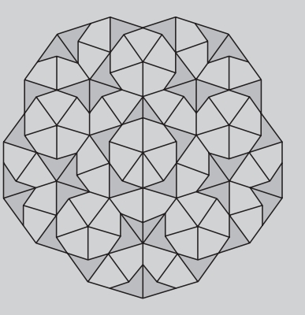
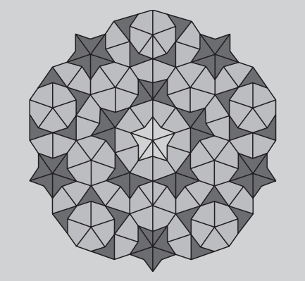
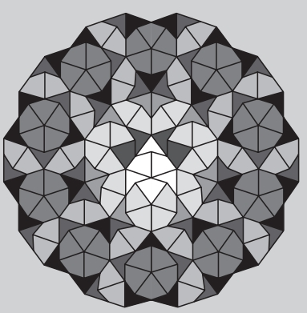

大部分概率游戏都是以数学为基础，因此我们不难找到与黄金比例相关的游戏。此外，五角星自古以来就是许多游戏的棋盘。在古埃及，五角星也被用于最古老的棋盘游戏之一。在埃及的库尔纳神庙里，人们发现了一个雕刻成五角星的游戏棋盘，可以追溯到公元前1700年左右。这个游戏叫作五角星棋。如今居住在希腊克里特岛上的人们还在玩着这种形式的游戏。
黄金跳棋

在几千个使用五角星棋盘的游戏中，五角星棋、金星棋、黄金跳棋、兀鹫棋只是其中的一小部分。
虽然这些游戏十分古老，但今天的人们依然玩着其中的大多数，而且各种游戏规则的说明也很简单易懂。在历史上，五角星棋是一种十分有趣的游戏，而黄金跳棋与黄金比例有着特殊的联系。下面我们就来看一下这两种游戏的规则。五角星棋是一种单人智力游戏，玩家的最终目标是将九枚棋子放到五角星的十个顶点上，其中包括五个角的顶点和小五边形的五个顶点。因为总共有十个点，所以始终有一个点上没有棋子。棋子每次可以移动三个顶点。（或者说可以“跳”过一个点）首先把棋子放在任意空的顶点上，此点计作“一”；然后沿直线移动这个棋子到第二个顶点（这个顶点上有没有棋子都可以），此点计作“二”；最后将它移动到第三个顶点（这个顶点上不能有棋子），此点计作“三”。随着棋子不断从初结点跳出占满棋盘，游戏的难度也在不断增加。黄金跳棋同样使用九枚棋子。首先把全部棋子放在棋盘的顶点上，剩余一个空的顶点。每位玩家轮流下棋，同国际跳棋一样，一枚棋子跳过另一枚棋子后落到空白顶点，被跳过的棋子算是被吃掉。握有最后一枚棋子的玩家为赢家，此时整个棋盘上只有一枚棋子。
古代的尼姆游戏充满了数学的趣味性，所以我们再来讲一个由它演变而来的游戏。该游戏使用到了斐波那契数列中的黄金比例，因此也被称为“斐波那契尼姆”。我们首先用N来代表未知数量的筹码。两名玩家从一堆筹码中轮流拿取若干。拿走最后一个筹码的玩家胜出。当然，最先开局的玩家不能拿走全部筹码。然而，在接下来的过程中，玩家只需要遵守以下游戏规则就可以了：
镶嵌艺术——“风筝和飞镖”
“飞镖”和“风筝”是罗杰·彭罗斯爵士创造的两种图形，可以镶嵌成许多非周期性的图案。请看下面的几个例子。

太阳

星星

车轮
·每一回合中，每位玩家必须拿走至少一个筹码；
·每位玩家拿走筹码的数量不能超过对手上一次拿走的两倍（如果我们在一个回合中拿走了四个筹码，轮到对手时最多可以拿走八个）。
这个游戏的数学奥秘在于，如果N是斐波那契数列中的一项，后拿筹码的玩家只要采取正确的策略就会一直胜出。但是，如果N不是斐波那契数列中的项，那么获胜者就是先拿筹码的玩家。